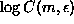
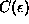
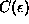
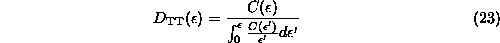
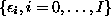
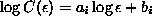
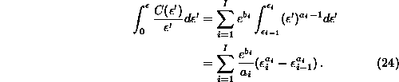
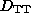
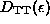
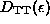

Convergence to a finite correlation dimension can be checked by plotting scale
dependent ``effective dimensions'' versus length scale for various
embeddings. The easiest way to proceed is to compute (numerically) the
derivative of  with respect to  , for example
by fitting straight lines to the log-log plot of . In
Fig.
, for example
by fitting straight lines to the log-log plot of . In
Fig.  (a)
we see the output of the routine c2 acting
on data from the NMR laser, processed by c2d in order to obtain local
slopes. By default, straight lines are fitted over one octave in
(a)
we see the output of the routine c2 acting
on data from the NMR laser, processed by c2d in order to obtain local
slopes. By default, straight lines are fitted over one octave in  ,
larger ranges give smoother results. We can see that on the large scales,
self-similarity is broken due to the finite extension of the attractor, and on
small but yet statistically significant scales we see the embedding dimension
instead of a saturated, m-independent value. This is the effect of noise,
which is infinite dimensional, and thus fills a volume in every embedding
space. Only on the intermediate scales we see the desired plateau where
the results are in good approximation independent of m and
,
larger ranges give smoother results. We can see that on the large scales,
self-similarity is broken due to the finite extension of the attractor, and on
small but yet statistically significant scales we see the embedding dimension
instead of a saturated, m-independent value. This is the effect of noise,
which is infinite dimensional, and thus fills a volume in every embedding
space. Only on the intermediate scales we see the desired plateau where
the results are in good approximation independent of m and  . The
region where scaling is established, not just the range selected for
straight line fitting, is called the scaling range.
. The
region where scaling is established, not just the range selected for
straight line fitting, is called the scaling range.
Since the statistical fluctuations in plots like Fig.  (a)
show characteristic (anti-)correlations, it has been
suggested [78, 79] to apply a maximum likelihood
estimator to obtain optimal values for
(a)
show characteristic (anti-)correlations, it has been
suggested [78, 79] to apply a maximum likelihood
estimator to obtain optimal values for  . The Takens-Theiler-estimator
reads
. The Takens-Theiler-estimator
reads

and can be obtained by processing the output of c2 by c2t. Since
is available only at discrete values
, we
interpolate it by a pure power law (or, equivalently, the log-log plot by
straight lines: ) in between these. The
resulting integrals can be solved
trivially and summed:

Plotting  versus  (Fig.
(Fig.  (b)) is an interesting alternative to the usual local slopes plot,
Fig.
(b)) is an interesting alternative to the usual local slopes plot,
Fig.  (a). It is tempting to use such an ``estimator of
dimension'' as a black box to provide a number one might quote as a dimension.
This would imply the unjustified assumption that all deviations from exact
scaling behavior is due to the statistical fluctuations. Instead, one still has
to verify the existence of a scaling regime. Only then,  evaluated at the upper end of the scaling range is a reasonable
dimension estimator.
(a). It is tempting to use such an ``estimator of
dimension'' as a black box to provide a number one might quote as a dimension.
This would imply the unjustified assumption that all deviations from exact
scaling behavior is due to the statistical fluctuations. Instead, one still has
to verify the existence of a scaling regime. Only then,  evaluated at the upper end of the scaling range is a reasonable
dimension estimator.